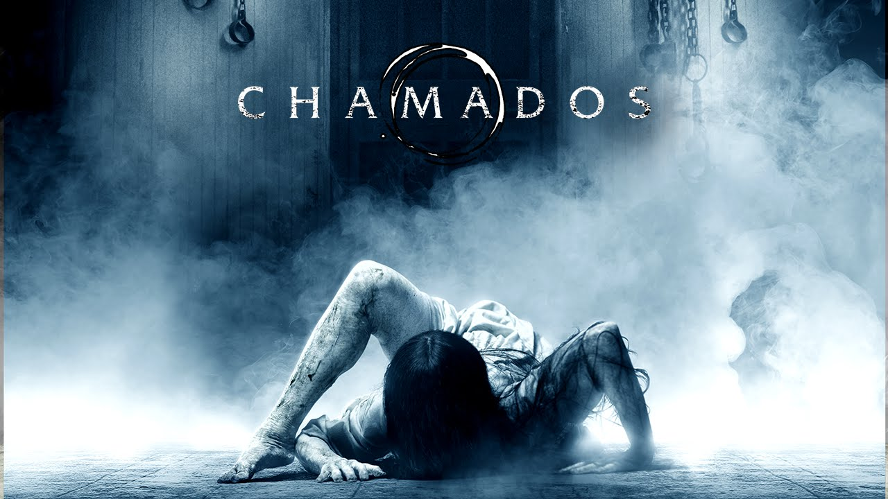

Diretor: Gore Verbiniski
É um filme de terror norte-americano, lançado em 2003, considerado um dos melhores filmes de terror da história. Com o sucesso, o filme arrecadou quase 250 milhões de dólares nos cinemas. O filme conta a maldição de uma fita cassete que no início aparenta ser apenas uma lenda urbana, no entanto com o decorrer da história, descobre-se que a maldição realmente existe naquelas pessoas que assistem o conteúdo da fita. Algumas das cenas do filme ficaram eternizadas no mundo cinematográfico: Após assistir a fita amaldiçoada, um telefone toca e após atender, uma voz estranha diz que a pessoa irá morrer depois de uma semana. Outra cena marcante é a fantasma Samara saindo da televisão.
Após a morte de Tomoko Oishi (Yuko Takeuchi), um parente, uma repórter, Reiko Asakawa (Nanako Matsushima), ouve histórias de um vídeo que mata quem o vê uma semana exatamente após assisti-lo. No início não dá importância aos rumores, mas ao descobrir que um amigo de Tomoko, que assistiu o vídeo, morreu exatamente uma semana depois ela começa a investigar. Após ver a fita estranhas coisas começam a acontecer e, assim, pede ajuda ao seu ex-marido, Ryuji Takayama (Hiroyuki Sanada), para tentar deter o relógio da morte, que começou a fazer tique-taque uma vez mais. Além disto ela toma conhecimento da existência de Sadako (Rie Inou), filha de uma famosa para-psicóloga submetida décadas antes a vários experimentos. Quando Yoichi (Rikiya Otaka), seu pequeno filho, assiste ao conteúdo da fita isto a lança em uma corrida contra o tempo para encontrar um meio de combater a sinistra maldição, que se manifestará em sete dias.
conheça os principais personagens